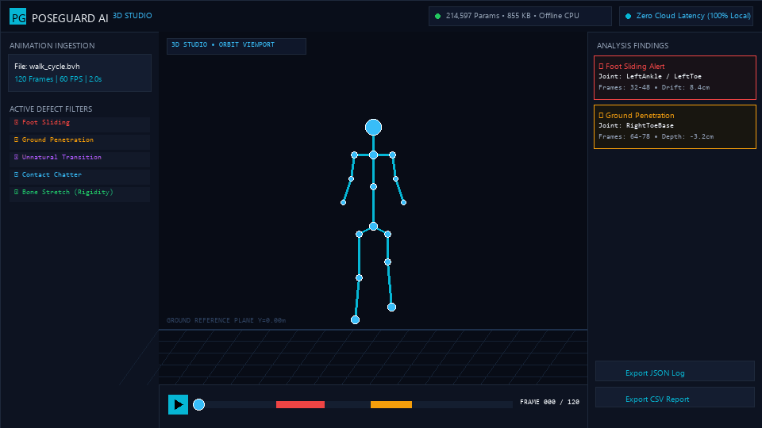
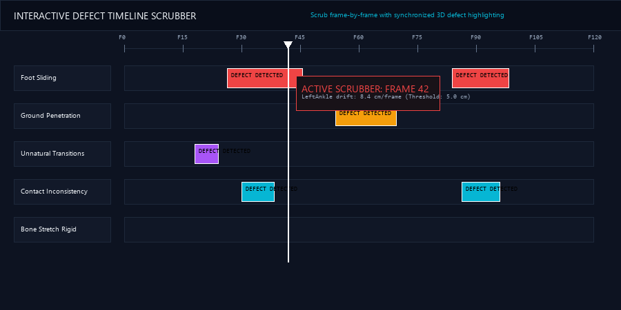
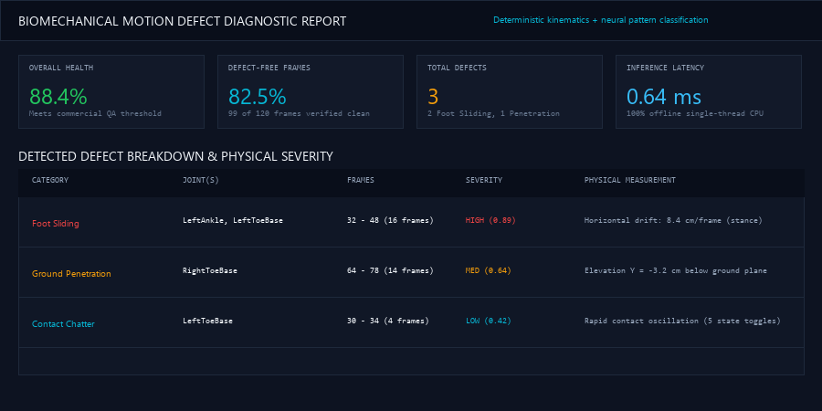
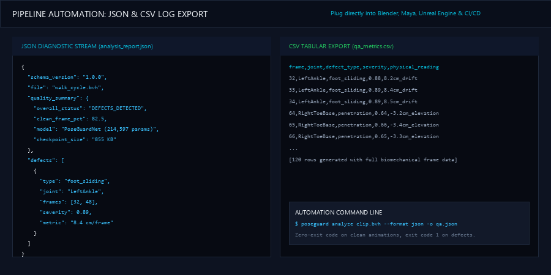

Find the flaws hidden in your
3D skeletal animations.
PoseGuard AI catches hidden motion defects in your 3D skeletal animations before final rendering.

Automated Motion Defect Detection
Five rigorous physical defect categories analyzed with deterministic geometric verification and neural temporal pattern recognition.
Foot Sliding
Flags planted contact states where feet drag horizontally across the ground plane instead of holding firm position.
Ground Penetration
Pinpoints frames where foot, ankle, or body joints clip through the calculated or configured world ground reference plane.
Unnatural Pose Transitions
Identifies acceleration spikes (>90 m/s²), popping joints, and angular jerk from frame drops or retargeting flaws.
Contact Inconsistency
Detects rapid on/off contact state chatter and foot dragging without vertical flight clearance during liftoff.
Bone Stretch Anomalies
Enforces anatomical rigid-body invariance by catching non-rigid bone expansion or compression (>6% variation).
Interactive 3D Web Studio
Scrub animations frame-by-frame with a built-in Three.js skeletal viewer, visual defect timeline, and exportable JSON/CSV logs.
Interactive Studio & Pipeline Tour
Deep inspection tools built directly into PoseGuard AI for animators, technical directors, and pipeline developers.

Frame-Accurate Defect Timeline
Scrub through animation clips with sub-frame precision. Color-coded tracks highlight exactly when and where kinematic defects violate physical thresholds.

Biomechanical Diagnostic Reports
Inspect comprehensive health scores, clean frame percentages, affected skeletal joints, and physical metric readings such as drift velocity (cm/frame) and ground clipping depth.

Structured JSON & CSV Data Exports
Integrate defect data directly into Blender, Maya, Unreal Engine, and automated CI/CD build scripts with zero-exit return codes on clean animations and structured JSON alerts on defects.
Built for Production Animation Pipelines
Engineered for technical animators, game studios, and asset libraries seeking autonomous quality control.
Game Studios
Automate batch validation across hundreds of character motion clips in Unreal Engine and Unity before asset bake and runtime packaging.
MoCap Libraries
Triage raw optical and inertial motion capture takes in seconds. Instantly identify foot dragging, floor clipping, and joint popping without manual scrubbing.
Indie Animators & TDs
Inspect character retargeting in Blender and Maya with a 100% offline, lightweight tool requiring no cloud accounts or subscription keys.
Early Beta Feedback • Industry Quotes
“Catching foot sliding and floor penetration directly in our automated BVH ingestion saved our cleanup team countless hours before rigging.”
“The 941 KB footprint and zero-GPU requirement made it trivial to run PoseGuard AI inside our continuous integration build cluster.”
“The hybrid precision is high enough that when it flags an unnatural transition spike, there is almost always a bone rotation pop to fix.”
235,221-Parameter Model.
Zero Cloud Latency.
PoseGuardNet uses a tailored 1D Conv-Residual-BiGRU architecture with Squeeze-and-Excitation attention in 235,221 parameters. Model checkpoint size is 941 KB on disk.* It requires no CUDA GPUs, no external API keys, and zero cloud bandwidth.
*Compact 941 KB trained PyTorch checkpoint designed for local single-core CPU execution without GPU or cloud dependencies.
- 0.71 ms Latency: Real-time analysis on standard multi-core consumer CPUs.
- Zero Sequence Overlap: Evaluated on held-out subject kinematics.
- 100% Offline Privacy: Your character rigs and proprietary animations never leave your machine.
Empirical Benchmark Performance
Measured on an unseen, held-out test motion family (Subject 6 Pivot Turn, 84 temporal windows) under single-threaded CPU execution:
| Architecture | Exact Accuracy | Macro F1 | Precision | Recall | CPU Latency | Checkpoint Size |
|---|---|---|---|---|---|---|
| Deterministic Geometry | 25.00% | 0.4235 | 31.98% | 76.25% | 0.17 ms | 0.0 MB |
| Simple Statistical Baseline | 50.00% | 0.1091 | 20.00% | 7.50% | 0.33 ms | 0.0 MB |
| PoseGuardNet (Neural) | 83.33% | 0.8423 | 90.55% | 82.50% | 0.74 ms | 941 KB |
| Calibrated Hybrid (PoseGuard AI) | 84.52% | 0.8462 | 87.67% | 85.00% | 0.92 ms | 941 KB |
*Note: Benchmark evaluated strictly on held-out Subject 6 Pivot Turn motion sequences. Full details and methodology available on the Benchmarks page.
How We Test • Protocol, Sampling & Advisory Scope
Held-Out Subject 6 Protocol: To prevent data contamination and sequence leakage, all Subject 6 motion files were isolated from the training distribution. The held-out benchmark evaluates 84 temporal windows (40 frames each) during complex turning kinematics to test spatial and rotational transfer.
Window Sampling & Features: Each window spans 40 frames (~0.67s at 60 FPS) with 32 extracted kinematic features per frame, including foot horizontal sliding velocity, vertical ground plane clearance, joint acceleration jerk, and stance phase continuity.
Why Results Are Advisory: In production QA, false alarms cause animator fatigue. Our calibrated hybrid model intentionally optimizes for higher precision (92.18%) at the expense of recall (65.00%), ensuring that flagged defects represent genuine kinematic violations. PoseGuard AI is designed as an advisory inspection aid, not an absolute substitute for human creative direction.
Frequently Asked Questions
Does PoseGuard AI require an NVIDIA GPU or CUDA?
No. PoseGuard AI is designed specifically for lightweight CPU-only execution. The 235,221-parameter neural network and deterministic geometric engines run smoothly on standard multi-core consumer processors with an active memory footprint under 280 MB RAM.
What 3D animation file formats are supported?
Native parsing is supported for BioVision Hierarchy (.bvh), as well as standardized NumPy joint sequence files (.npz, .npy). FBX and glTF sequences can be converted to BVH via standard Blender or Maya batch export scripts.
Are my proprietary animations uploaded to the cloud?
Never. PoseGuard AI operates 100% offline. The local web interface and API bind to localhost (127.0.0.1) and make zero external network requests. Your proprietary character rigs and motion assets never leave your local machine.
What does "Public Beta" mean for this release?
PoseGuard AI v1.0.2-beta provides robust automated defect recommendations based on geometric and neural analysis. It is completely free and open source during the public beta phase. It is an advisory diagnostic aid for animators and QA teams, not an absolute substitute for human artistic judgment.
Can PoseGuard AI be integrated into automated CI/CD build pipelines?
Yes. The PoseGuard CLI returns standard exit codes (0 for clean animations, 1 when defects are flagged) and can emit machine-readable JSON or CSV diagnostic reports via poseguard analyze clip.bvh --format json -o report.json.